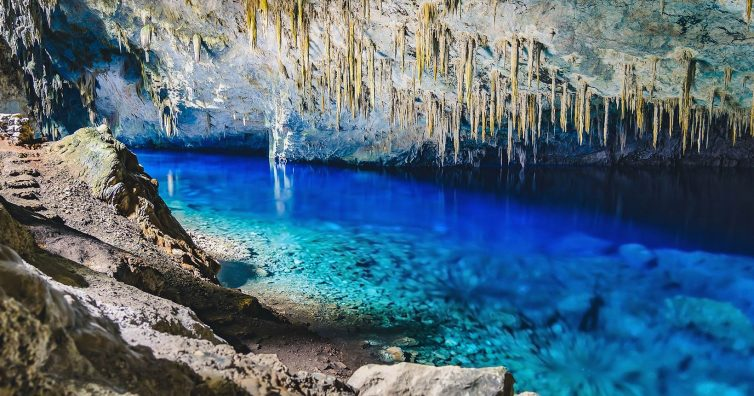
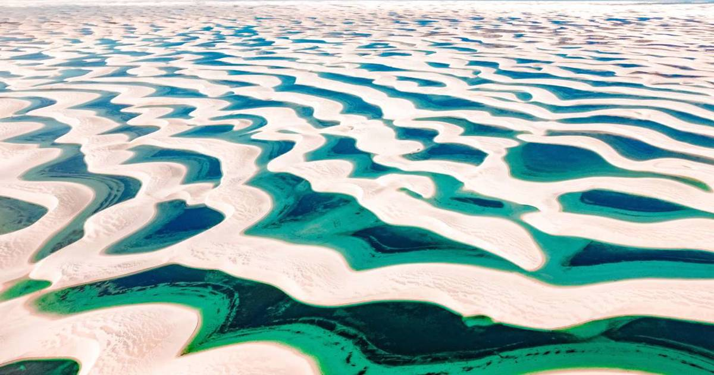
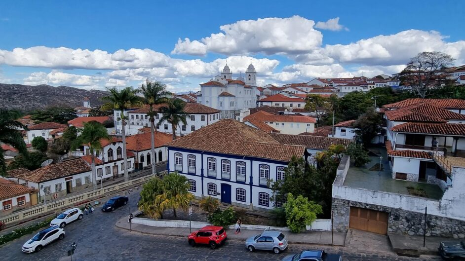

HORIZONTE
Melhores destinos no Brasil
Gruta do Lago Azul, em Bonito – MS
Excelente para quem busca contato com a natureza, Bonito é o lugar perfeito para quem quer contato com a natureza e uma boa dose aventura! A cidade tem um ritmo de cidade de interior e dezenas de passeios para fazer, que incluem flutuação em rios cristalinos, caminhadas e banhos de cachoeira. Tudo é feito de forma bem organizada e de maneira a preservar o meio ambiente.

Chapada dos Veadeiros, Goiás
Uma das cidades para se ter como base para visitar a Chapada dos Veadeiros, em Goiás, é a pequena Alto Paraíso. Pequenina e simpática, ela é uma cidade simples, mas com várias pousadinhas, casas para alugar e bons restaurantes. A partir de lá você pode ir de carro para dezenas de cachoeiras incríveis, com os mais diversos cenários, fazer trilhas, voar de balão, além de observar a fauna e flora locais, que são encantadoras!

Lençóis Maranhenses, Maranhão
As dunas de areia e lagoas com águas cristalinas formadas pelas chuvas nos Lençóis Maranhenses tornam o lugar tão belo que já foi várias vezes cenário de filmes. A região dos Lençóis oferece uma paisagem realmente única e surpreendente! É mais uma boa dica para quem busca contato com a natureza e paisagens exóticas. Atins, localizada na região, integra nossa lista de melhores praias do Nordeste!

Diamantina, Minas Gerais
Os charmosos casarões e igrejas centenárias que compõem as ruas de pedras estão entre as maiores atrações de Diamantina. E é esse cenário impressionante que serve de palco para o maior espetáculo local: a Vesperata. O show, que reúne dezenas de instrumentistas nas varandas dos edifícios históricos, é comandado por um maestro em meio ao público e emociona a todos os turistas, que têm o privilégio de assistir ao espetáculo.
Patrimônio Cultural da Humanidade declarado pela Unesco, Diamantina é um destino bem fácil de ser explorado e pode tranquilamente ser visitado nos feriados. Aproveite e já se organize para conhecer esse cantinho charmoso de Minas Gerais.

Dicas para sua Viagem no Brasil
- Melhores épocas para visitar:
- Bonito: Entre maio e agosto (águas mais claras).
- Lençóis Maranhenses: Entre junho e agosto (lagoas cheias).
- Chapada dos Veadeiros: Entre maio e setembro (período de seca, ideal para trilhas e cachoeiras).
- Diamantina: Entre abril e outubro (época da Vesperata e clima mais seco para caminhar no centro histórico).
- O que levar na mala:
- Protetor solar e repelente.
- Roupas leves para as trilhas.
- Calçados confortáveis (tênis ou bota de trilha).